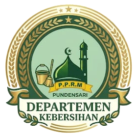
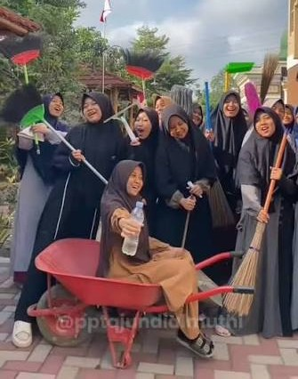
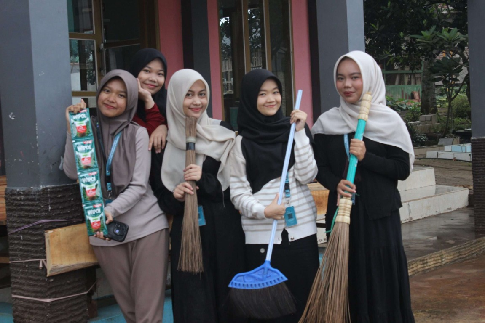
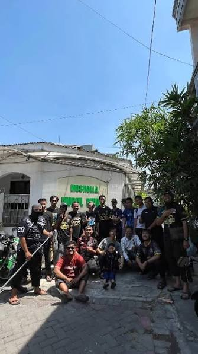
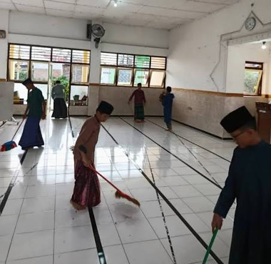

Peminjaman Alat Kebersihan
| Alat | Stok | Dipinjam | Tersedia | Peminjam | Tindakan |
|---|
Kebersihan dan lingkungan asri santri
PONDOK PESANTREN RAUDLATUL MUSTAHOFA
Catat Peminjaman
TENTANG KAMI
Kebersihan pondok adalah tanggung jawab bersama. Menjaga kebersihan adalah bagian dari ibadah dan cara kita mencintai tempat kita menuntut ilmu.
Mewujudkan pondok yang bersih, sehat, dan nyaman.
Membiasakan hidup bersih setiap hari.
Bergotong royong menjaga kebersihan pondok.
Mengurangi sampah dan merawat fasilitas pondok.
| Alat | Stok | Dipinjam | Tersedia | Peminjam | Tindakan |
|---|
Momen kebersamaan santri merawat lingkungan pondok dengan penuh kepedulian.

Semangat kerja bakti
Persiapan kerja bakti
Gotong royong
Membersihkan aulaRutinitas piket untuk menjaga asrama, kamar mandi, halaman, dan lingkungan pondok tetap bersih setiap hari.
| No. | Kegiatan | Keterangan |
|---|---|---|
| 1 | Piket Kebersihan | Mengatur jadwal piket santri setiap hari. |
| 2 | Kebersihan Asrama | Memastikan kamar tidur dan lingkungan asrama tetap bersih. |
| 3 | Kebersihan Kamar Mandi | Memastikan kamar mandi bersih dan tidak berbau. |
| 4 | Kebersihan Halaman | Menjaga halaman pondok agar bebas dari sampah. |
| 5 | Pembuangan Sampah | Memastikan sampah dibuang pada tempatnya. |
Kegiatan bersama dan pemeriksaan rutin untuk menjaga kebersihan fasilitas serta memastikan jadwal piket berjalan.
| No. | Kegiatan | Keterangan |
|---|---|---|
| 1 | Jumat Bersih | Melaksanakan kegiatan bersih-bersih bersama setiap hari Jumat. |
| 2 | Pemeriksaan Asrama | Memeriksa kebersihan dan kerapian setiap kamar santri. |
| 3 | Pembersihan Lingkungan | Membersihkan area halaman, selokan, dan fasilitas umum. |
| 4 | Evaluasi Piket | Mengevaluasi pelaksanaan jadwal piket santri. |
Penilaian, pembinaan, dan perawatan fasilitas dilakukan agar kebersihan pondok terus terjaga.
| No. | Kegiatan | Keterangan |
|---|---|---|
| 1 | Lomba Kebersihan Kamar | Mengadakan perlombaan kamar terbersih dan paling rapi. |
| 2 | Evaluasi Kebersihan | Melakukan penilaian kebersihan seluruh lingkungan pondok. |
| 3 | Pembinaan Santri | Memberikan arahan tentang pentingnya menjaga kebersihan. |
| 4 | Perawatan Fasilitas | Memeriksa dan melaporkan fasilitas kebersihan yang rusak. |
Coba ubah filter jenis, bulan, atau tanggal.
LAYANAN PESAN PONDOK